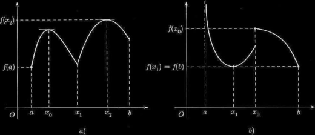

Fermat's Theorem
Punti di estremo: punti di massimo e minimo assoluti e relativi
Richiamiamo le nozioni di massimo e minimo assoluti (o globali) e locali.
Si dice che M è massimo assoluto di f in [a,b] e x0 ∈ [a,b] è punto di massimo assoluto se
f(x0) = M ≥ f(x), ∀x in [a,b]
Analoga definizione per il minimo assoluto.
Si dice che M è massimo locale (o relativo) per f e che x0 è punto di massimo locale se:
∃(x0 − δ, x0 + δ) : M = f(x0) ≥ f(x) ∀x in (x0 − δ, x0 + δ) ∩ [a,b]
Analogamente per il minimo locale.
Notiamo espressamente che:
Per definire i punti di estremo (max e min assoluti e non) NON abbiamo utilizzato il concetto di derivata, ma solo il confronto dei valori y = f(x);
I punti di massimo relativo e minimo relativo sono detti punti di estremo relativo, mentre i punti di massimo e minimo assoluto sono detti punti di estremo assoluto;
Un punto di estremo assoluto è anche punto di estremo relativo, il viceversa non è sempre vero;
Un un punto di massimo o minimo relativo la funzione può essere NON derivabile;
Punti di cuspide sono sempre punti di massimo o di minimo relativo. Punti angolosi, non necessariamente sono punti di estremo;
il minimo e il massimo globale di f (se esistono) sono unici (naturalmente i punti di max e min possono essere più di uno);
massimi e minimi locali possono essere più di uno. Evidentemente ogni estremo globale è anche locale.
Le seguenti figure illustrano varie situazioni.
La funzione in fig. a) presenta:
massimo globale M = f(x2); x2 unico punto di massimo globale.
minimo globale m = f(a); a unico punto di minimo globale.
un massimo locale (non globale) in x = x0.
- due minimi locali in x = x1 (che è anche un punto angoloso) e x = b (estremo destro di [a,b].
La funzione in fig. b) presenta:
un massimo locale in x = x0 (punto di discontinuità a salto).
minimo globale m = f(b) = f(x1); b e x1 sono punti di minimo globale.
il massimo globale di f non esiste (si ha limx → a+ f(x) = +∞).
Le figure mostrano che in un punto di estremo (locale o globale) f può non essere derivabile ed essere perfino discontinua. Se però f: [a,b] ⟶ ℝ è derivabile in un punto x0 che sia di massimo o minimo locale e che sia diverso da a e b, allora in x0 la derivata si annulla, ossia la tangente al grafico di (x0, f(x0)) è orizzontale.
The next theorem shows that a local extreme point in the interior of the domain of a differentiable function must be a stationary point. This theorem is named for French mathematician Pierre de Fermat (1601 – 1665). Although his life predates the discovery of calculus proper, Fermat computed tangent lines and extrema for many families of curves.
Theorem 5.4.1. (di Fermat). Sia f: [a,b] ⟶ ℝ, derivabile in x ∈ (a,b). Se x è punto di estremo locale allora
f'(x) = 0
Dim. Sia, ad es., x punto di max locale. Allora, per z abbastanza vicino a x, si ha f(z) ≤ f(x). Perciò
(abbiamo applicato il T. di permanenza del segno). D'altra parte
Essendo f derivabile in x, si ha f'(x) = f−(x) = f+(x) = 0. □
Punti stazionari
I punti in cui f' si annulla, si dicono punti stazionari per f. Abbiamo appena visto che, se x non si trova agli estremi dell'intervallo nel quale f è definita, allora
x di estremo locale ⇒ x stazionario
Vi possono però essere punti stazionari che non sono di estremo. Ad es., la funzione f(x) = x3 ha f'(x) 3x2 che si annulla nell'origine, ma x = 0 non è punto di estremo.
Si tratta di un punto di
Osservazione 1. Per definire un punto stazionario serve la definizione di derivata prima.
Osservazione 2. Un punto stazionario non è necessariamente un punto di massimo o di minimo relativo.
Osservazione 3. Non è detto che i punti di massimo e minimo relativo siano punti stazionari.
x0 non è punto stazionario.